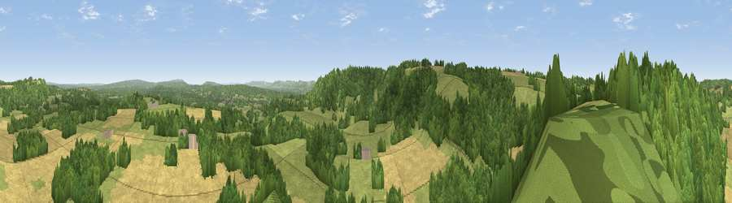

Viewpoint near Hawkley
#30974 in England · top 35% of its area beats it · near Hawkley · path 214 mWhere it is
The exact computed spot (SU 75325 27625). Click the marker for map links.
Public access: the nearest public right of way is about 214 m away — the final stretch may cross private land. Computed from Natural England's CRoW access layer and OpenStreetMap rights of way — not the legal definitive map. Always verify locally.
The view, rendered

A 360° render of this exact spot computed from the terrain model, tree cover and land cover — summer colours, afternoon light, calibrated against photographs of famous viewpoints. Real trees, hedges and buildings will differ in detail.
The panorama
Grey silhouette: terrain skyline in each direction (720 bearings, Earth curvature and refraction included). Dashed green: skyline with trees (+15 m) and buildings (+8 m) as obstacles. Blue strip: how far the ground is visible on each bearing.
Where the view opens
Wedge length = distance to the farthest visible ground on that bearing (vegetation-aware). Rings at 10, 25 and 50 km.
What fills the view
61% grassland · 35% woodland · 4% cropland ·
Angular shares of the visible panorama (visual magnitude), not map area. Landscape diversity 0.36 (0–1 Shannon).
Key numbers
More beautiful places nearby
The staircase of upgrades: each row has a higher view potential than everything closer. Driving times are estimates from straight-line distance, calibrated against real road routing — check an actual route before setting out.
| Place | Direction | Drive | Score |
|---|---|---|---|
| Viewpoint near West Liss | SSE · 1 km | ~2 min | 39.7 |
| Viewpoint near Steep | SW · 1 km | ~3 min | 61.9 |
| Viewpoint near Steep | WSW · 1 km | ~3 min | 68.7 |
| Viewpoint near Buriton | SSW · 8 km | ~16 min | 75.3 |
| Viewpoint near Buriton | SSW · 8 km | ~16 min | 80.0 |
| Beacon Hill | SSE · 11 km | ~20 min | 85.8 |
| Chanctonbury Ring | ESE · 42 km | ~61 min | 87.0 |
| Viewpoint near St. Lawrence | SSW · 54 km | ~76 min | 88.2 |
51.04305, -0.92693 · source: screening · position refined by local search. Computed location — check access rights before visiting.